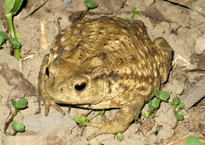
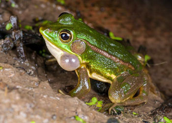

一类原始的、初登陆的、具五趾型的变温四足动物，皮肤裸露，分泌腺众多，混合型血液循环。其个体发育周期有一个变态过程，即以鳃（新生器官）呼吸生活于水中的幼体，在短期内完成变态，成为以肺呼吸能营陆地生活的成体。现生的有3目约40科400属4000种。除南极洲和海洋性岛屿外,遍布全球。我国现有11科40属270余种，主要分布于秦岭以南、华西和西南山区属种最多。两栖动物既有从鱼类继承下来适于水生的性状，如卵和幼体的形态及产卵方式等；又有新生的适应于陆栖的性状，如感觉器、运动装置及呼吸循环系统等。变态既是一种新生适应，又反映了由水到陆主要器官系统的改变过程。
|  |  |
|---|